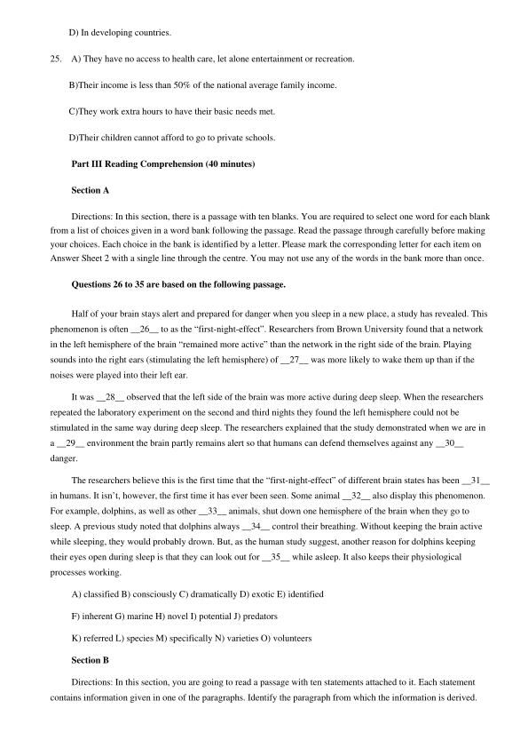
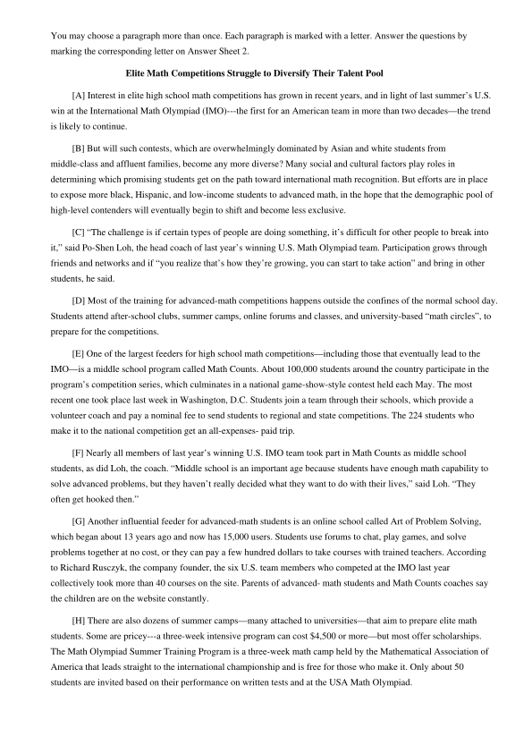
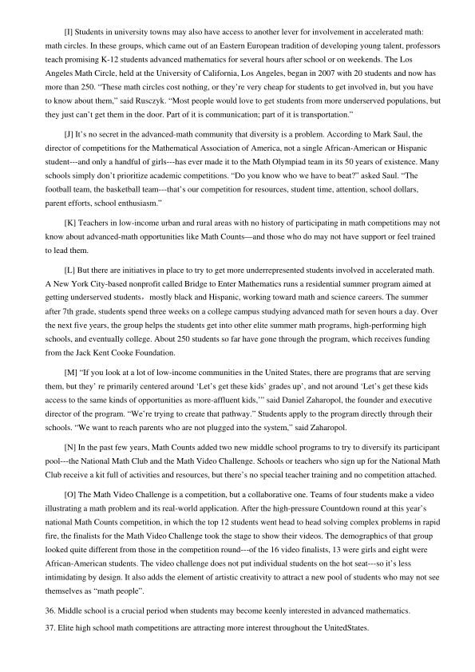
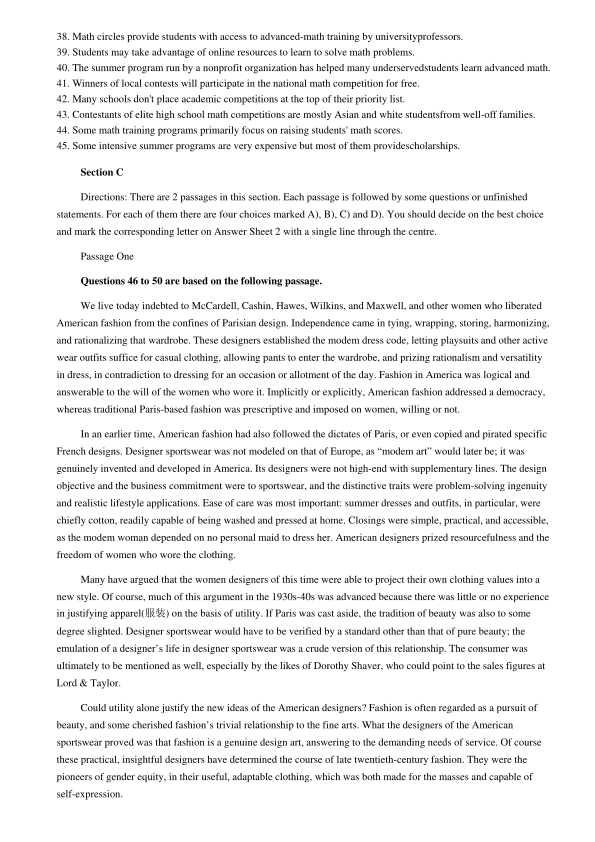
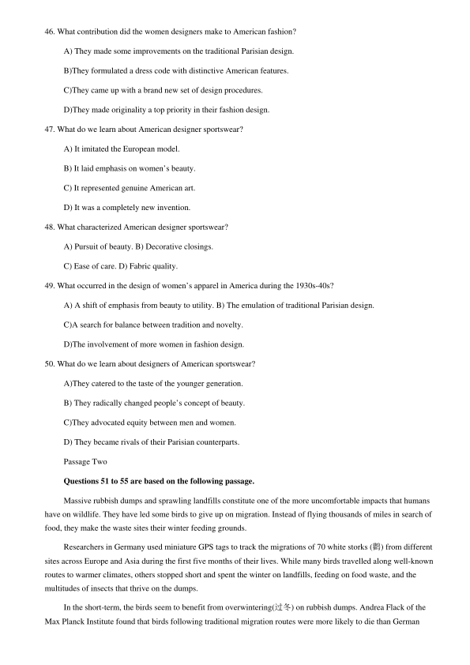
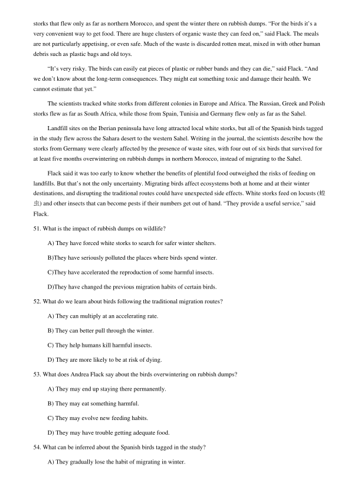
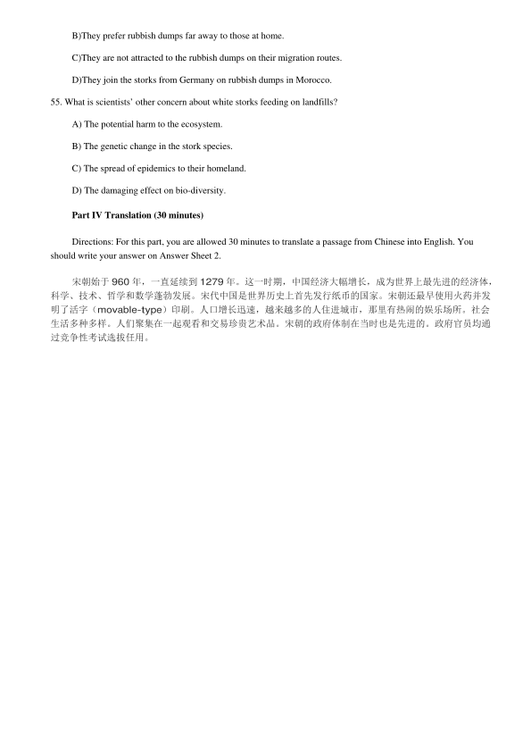

第 1 / 11 页

2017 年6 月大学英语六级考试真题（第二套）
Part I Writing (30 minutes)
Directions: Suppose you are asked to give advice on whether to attend a vocational college or a university,
write an essay to state your opinion. You are required to write at least 150 words but no more than 200 words.
Part II Listening Comprehension (30 minutes)
Section A
Directions: In this section, you will hear two long conversations. At the end of each conversation, you will hear
four questions. Both the conversation and the questions will be spoken only once. After you hear a question, you
must choose the best answer from the four choices marked A), B), C) and D). Then mark the corresponding letter on
Answer Sheet 1 with a single line through the centre.
Questions 1 to 4 are based on the conversation you have just heard.
1. A) He would feel insulted.
B) He would feel very sad.
C) He would be embarrassed.
D) He would be disappointed.
2. A) They are worthy of a prize.
B) They are of little value.
C) They make good reading.
D) They need improvement.
3. A) He seldom writes a book straight through.
B) He writes several books simultaneously.
C) He draws on his real-life experiences.
D) He often turns to his wife for help.
4. A) Writing a book is just like watching a football match.
B) Writers actually work every bit as hard as footballers.
C) He likes watching a football match after finishing a book.
D) Unlike a football match, there is no end to writing a book.
Questions 5 to 8 are based on the conversation you have just heard.
5. A) Achievements of black male athletes in college.
B) Financial assistance to black athletes in college.
C) High college dropout rates among black athletes.
D) Undergraduate enrollments of black athletes.
查看 / 复制本页文字
2017 年6 月大学英语六级考试真题（第二套） Part I Writing (30 minutes) Directions: Suppose you are asked to give advice on whether to attend a vocational college or a university, write an essay to state your opinion. You are required to write at least 150 words but no more than 200 words. Part II Listening Comprehension (30 minutes) Section A Directions: In this section, you will hear two long conversations. At the end of each conversation, you will hear four questions. Both the conversation and the questions will be spoken only once. After you hear a question, you must choose the best answer from the four choices marked A), B), C) and D). Then mark the corresponding letter on Answer Sheet 1 with a single line through the centre. Questions 1 to 4 are based on the conversation you have just heard. 1. A) He would feel insulted. B) He would feel very sad. C) He would be embarrassed. D) He would be disappointed. 2. A) They are worthy of a prize. B) They are of little value. C) They make good reading. D) They need improvement. 3. A) He seldom writes a book straight through. B) He writes several books simultaneously. C) He draws on his real-life experiences. D) He often turns to his wife for help. 4. A) Writing a book is just like watching a football match. B) Writers actually work every bit as hard as footballers. C) He likes watching a football match after finishing a book. D) Unlike a football match, there is no end to writing a book. Questions 5 to 8 are based on the conversation you have just heard. 5. A) Achievements of black male athletes in college. B) Financial assistance to black athletes in college. C) High college dropout rates among black athletes. D) Undergraduate enrollments of black athletes.
第 2 / 11 页
6. A) They display great talent in every kind of game.
B) They are better at sports than at academic work.
C) They have difficulty finding money to complete their studies.
D) They make money for the college but often fail to earn a degree.
7. A) About 15%.
B) Around 40%.
C) Slightly over 50%.
D) Approximately 70%.
8. A) Coaches lack the incentive to graduate them.
B) College degrees do not count much to them.
C) They have little interest in academic work.
D) Schools do not deem it a serious problem.
Section B
Directions: In this section, you will hear two passages. At the end of each passage, you will hear three or four
questions. Both the passage and the questions will be spoken only once. After you hear a question, you must choose
the best answer from the four choices marked A), B), C) and D). Then mark the corresponding letter on Answer Sheet
1 with a single line through the centre.
Questions 9 to 12 are based on the passage you have just heard.
9. A) Marketing strategies.
B) Holiday shopping.
C) Shopping malls.
D) Online stores.
10. A) About 50% of holiday shoppers.
B) About 20-30% of holiday shoppers.
C) About 136 million.
D) About 183.8 million.
11. A) They have fewer customers.
B) They find it hard to survive.
C) They are thriving once more.
D) They appeal to elderly customers.
12. A) Better quality of consumer goods.
B) Higher employment and wages.
查看 / 复制本页文字
6. A) They display great talent in every kind of game. B) They are better at sports than at academic work. C) They have difficulty finding money to complete their studies. D) They make money for the college but often fail to earn a degree. 7. A) About 15%. B) Around 40%. C) Slightly over 50%. D) Approximately 70%. 8. A) Coaches lack the incentive to graduate them. B) College degrees do not count much to them. C) They have little interest in academic work. D) Schools do not deem it a serious problem. Section B Directions: In this section, you will hear two passages. At the end of each passage, you will hear three or four questions. Both the passage and the questions will be spoken only once. After you hear a question, you must choose the best answer from the four choices marked A), B), C) and D). Then mark the corresponding letter on Answer Sheet 1 with a single line through the centre. Questions 9 to 12 are based on the passage you have just heard. 9. A) Marketing strategies. B) Holiday shopping. C) Shopping malls. D) Online stores. 10. A) About 50% of holiday shoppers. B) About 20-30% of holiday shoppers. C) About 136 million. D) About 183.8 million. 11. A) They have fewer customers. B) They find it hard to survive. C) They are thriving once more. D) They appeal to elderly customers. 12. A) Better quality of consumer goods. B) Higher employment and wages.
第 3 / 11 页
C) Greater varieties of commodities.
D) People having more leisure time.
Questions 13 to 15 are based on the passage you have just heard.
13. A) They are new species of big insects.
B)They are overprescribed antibiotics.
C)They are life-threatening diseases.
D)They are antibiotic-resistant bacteria.
14. A) Antibiotics are now in short supply.
B)Many infections are no longer curable.
C)Large amounts of tax money are wasted.
D)Routine operations have become complex.
15. A) Facilities.
B)Expertise.
C)Money.
D)Publicity.
Section C
Directions: In this section, you will hear three recordings of lectures or talks followed by three or four questions.
The recordings will be played only once. After you hear a question, you must choose the best answer from the four
choices marked A), B), CJ and D). Then mark the corresponding letter on Answer Sheet 1 with a single line through
the centre.
Questions 16 to 18 are based on the recording you have just heard.
16. A) It is accessible only to the talented.
B) It improves students’ ability to think.
C) It starts a lifelong learning process.
D) It gives birth to many eminent scholars.
17. A) They encourage academic democracy.
B) They promote globalization.
C) They uphold the presidents’ authority.
查看 / 复制本页文字
C) Greater varieties of commodities. D) People having more leisure time. Questions 13 to 15 are based on the passage you have just heard. 13. A) They are new species of big insects. B)They are overprescribed antibiotics. C)They are life-threatening diseases. D)They are antibiotic-resistant bacteria. 14. A) Antibiotics are now in short supply. B)Many infections are no longer curable. C)Large amounts of tax money are wasted. D)Routine operations have become complex. 15. A) Facilities. B)Expertise. C)Money. D)Publicity. Section C Directions: In this section, you will hear three recordings of lectures or talks followed by three or four questions. The recordings will be played only once. After you hear a question, you must choose the best answer from the four choices marked A), B), CJ and D). Then mark the corresponding letter on Answer Sheet 1 with a single line through the centre. Questions 16 to 18 are based on the recording you have just heard. 16. A) It is accessible only to the talented. B) It improves students’ ability to think. C) It starts a lifelong learning process. D) It gives birth to many eminent scholars. 17. A) They encourage academic democracy. B) They promote globalization. C) They uphold the presidents’ authority.
第 4 / 11 页
D) They protect students’ rights.
18. A) His thirst for knowledge.
B) His eagerness to find a job.
C) His contempt for authority.
D) His potential for leadership.
Questions 19 to 22 are based on the recording you have just heard.
19.
A) Few people know how to retrieve information properly.
B)People can enhance their memory with a few tricks.
C)Most people have a rather poor long-term memory.
D)People tend to underestimate their mental powers.
20.
A) They present the states in a surprisingly different order.
B)They include more or less the same number of states.
C)They are exactly the same as is shown in the atlas.
D)They contain names of the most familiar states.
21.
A) Focusing on what is likely to be tested.
B)Having a good sleep the night before.
C)Reviewing your lessons where the exam is to take place.
D)Making sensible decisions while choosing your answers.
22.
A) Discover when you can learn best.
B) Change your time of study daily.
C) Give yourself a double bonus afterwards.
D) Follow the example of a marathon runner.
Questions 23 to 25 are based on the recording you have just heard.
23.
A) He is a politician.
B) He is a businessman.
C)He is a sociologist.
D) He is an economist.
24.
A) In slums.
B) In Africa.
C) In pre-industrial societies.
查看 / 复制本页文字
D) They protect students’ rights. 18. A) His thirst for knowledge. B) His eagerness to find a job. C) His contempt for authority. D) His potential for leadership. Questions 19 to 22 are based on the recording you have just heard. 19. A) Few people know how to retrieve information properly. B)People can enhance their memory with a few tricks. C)Most people have a rather poor long-term memory. D)People tend to underestimate their mental powers. 20. A) They present the states in a surprisingly different order. B)They include more or less the same number of states. C)They are exactly the same as is shown in the atlas. D)They contain names of the most familiar states. 21. A) Focusing on what is likely to be tested. B)Having a good sleep the night before. C)Reviewing your lessons where the exam is to take place. D)Making sensible decisions while choosing your answers. 22. A) Discover when you can learn best. B) Change your time of study daily. C) Give yourself a double bonus afterwards. D) Follow the example of a marathon runner. Questions 23 to 25 are based on the recording you have just heard. 23. A) He is a politician. B) He is a businessman. C)He is a sociologist. D) He is an economist. 24. A) In slums. B) In Africa. C) In pre-industrial societies.
第 5 / 11 页

D) In developing countries.
25.
A) They have no access to health care, let alone entertainment or recreation.
B)Their income is less than 50% of the national average family income.
C)They work extra hours to have their basic needs met.
D)Their children cannot afford to go to private schools.
Part III Reading Comprehension (40 minutes)
Section A
Directions: In this section, there is a passage with ten blanks. You are required to select one word for each blank
from a list of choices given in a word bank following the passage. Read the passage through carefully before making
your choices. Each choice in the bank is identified by a letter. Please mark the corresponding letter for each item on
Answer Sheet 2 with a single line through the centre. You may not use any of the words in the bank more than once.
Questions 26 to 35 are based on the following passage.
Half of your brain stays alert and prepared for danger when you sleep in a new place, a study has revealed. This
phenomenon is often __26__ to as the “first-night-effect”. Researchers from Brown University found that a network
in the left hemisphere of the brain “remained more active” than the network in the right side of the brain. Playing
sounds into the right ears (stimulating the left hemisphere) of __27__ was more likely to wake them up than if the
noises were played into their left ear.
It was __28__ observed that the left side of the brain was more active during deep sleep. When the researchers
repeated the laboratory experiment on the second and third nights they found the left hemisphere could not be
stimulated in the same way during deep sleep. The researchers explained that the study demonstrated when we are in
a __29__ environment the brain partly remains alert so that humans can defend themselves against any __30__
danger.
The researchers believe this is the first time that the “first-night-effect” of different brain states has been __31__
in humans. It isn’t, however, the first time it has ever been seen. Some animal __32__ also display this phenomenon.
For example, dolphins, as well as other __33__ animals, shut down one hemisphere of the brain when they go to
sleep. A previous study noted that dolphins always __34__ control their breathing. Without keeping the brain active
while sleeping, they would probably drown. But, as the human study suggest, another reason for dolphins keeping
their eyes open during sleep is that they can look out for __35__ while asleep. It also keeps their physiological
processes working.
A) classified B) consciously C) dramatically D) exotic E) identified
F) inherent G) marine H) novel I) potential J) predators
K) referred L) species M) specifically N) varieties O) volunteers
Section B
Directions: In this section, you are going to read a passage with ten statements attached to it. Each statement
contains information given in one of the paragraphs. Identify the paragraph from which the information is derived.
查看 / 复制本页文字
D) In developing countries. 25. A) They have no access to health care, let alone entertainment or recreation. B)Their income is less than 50% of the national average family income. C)They work extra hours to have their basic needs met. D)Their children cannot afford to go to private schools. Part III Reading Comprehension (40 minutes) Section A Directions: In this section, there is a passage with ten blanks. You are required to select one word for each blank from a list of choices given in a word bank following the passage. Read the passage through carefully before making your choices. Each choice in the bank is identified by a letter. Please mark the corresponding letter for each item on Answer Sheet 2 with a single line through the centre. You may not use any of the words in the bank more than once. Questions 26 to 35 are based on the following passage. Half of your brain stays alert and prepared for danger when you sleep in a new place, a study has revealed. This phenomenon is often __26__ to as the “first-night-effect”. Researchers from Brown University found that a network in the left hemisphere of the brain “remained more active” than the network in the right side of the brain. Playing sounds into the right ears (stimulating the left hemisphere) of __27__ was more likely to wake them up than if the noises were played into their left ear. It was __28__ observed that the left side of the brain was more active during deep sleep. When the researchers repeated the laboratory experiment on the second and third nights they found the left hemisphere could not be stimulated in the same way during deep sleep. The researchers explained that the study demonstrated when we are in a __29__ environment the brain partly remains alert so that humans can defend themselves against any __30__ danger. The researchers believe this is the first time that the “first-night-effect” of different brain states has been __31__ in humans. It isn’t, however, the first time it has ever been seen. Some animal __32__ also display this phenomenon. For example, dolphins, as well as other __33__ animals, shut down one hemisphere of the brain when they go to sleep. A previous study noted that dolphins always __34__ control their breathing. Without keeping the brain active while sleeping, they would probably drown. But, as the human study suggest, another reason for dolphins keeping their eyes open during sleep is that they can look out for __35__ while asleep. It also keeps their physiological processes working. A) classified B) consciously C) dramatically D) exotic E) identified F) inherent G) marine H) novel I) potential J) predators K) referred L) species M) specifically N) varieties O) volunteers Section B Directions: In this section, you are going to read a passage with ten statements attached to it. Each statement contains information given in one of the paragraphs. Identify the paragraph from which the information is derived.
第 6 / 11 页

You may choose a paragraph more than once. Each paragraph is marked with a letter. Answer the questions by
marking the corresponding letter on Answer Sheet 2.
Elite Math Competitions Struggle to Diversify Their Talent Pool
[A] Interest in elite high school math competitions has grown in recent years, and in light of last summer’s U.S.
win at the International Math Olympiad (IMO)---the first for an American team in more than two decades—the trend
is likely to continue.
[B] But will such contests, which are overwhelmingly dominated by Asian and white students from
middle-class and affluent families, become any more diverse? Many social and cultural factors play roles in
determining which promising students get on the path toward international math recognition. But efforts are in place
to expose more black, Hispanic, and low-income students to advanced math, in the hope that the demographic pool of
high-level contenders will eventually begin to shift and become less exclusive.
[C] “The challenge is if certain types of people are doing something, it’s difficult for other people to break into
it,” said Po-Shen Loh, the head coach of last year’s winning U.S. Math Olympiad team. Participation grows through
friends and networks and if “you realize that’s how they’re growing, you can start to take action” and bring in other
students, he said.
[D] Most of the training for advanced-math competitions happens outside the confines of the normal school day.
Students attend after-school clubs, summer camps, online forums and classes, and university-based “math circles”, to
prepare for the competitions.
[E] One of the largest feeders for high school math competitions—including those that eventually lead to the
IMO—is a middle school program called Math Counts. About 100,000 students around the country participate in the
program’s competition series, which culminates in a national game-show-style contest held each May. The most
recent one took place last week in Washington, D.C. Students join a team through their schools, which provide a
volunteer coach and pay a nominal fee to send students to regional and state competitions. The 224 students who
make it to the national competition get an all-expenses- paid trip.
[F] Nearly all members of last year’s winning U.S. IMO team took part in Math Counts as middle school
students, as did Loh, the coach. “Middle school is an important age because students have enough math capability to
solve advanced problems, but they haven’t really decided what they want to do with their lives,” said Loh. “They
often get hooked then.”
[G] Another influential feeder for advanced-math students is an online school called Art of Problem Solving,
which began about 13 years ago and now has 15,000 users. Students use forums to chat, play games, and solve
problems together at no cost, or they can pay a few hundred dollars to take courses with trained teachers. According
to Richard Rusczyk, the company founder, the six U.S. team members who competed at the IMO last year
collectively took more than 40 courses on the site. Parents of advanced- math students and Math Counts coaches say
the children are on the website constantly.
[H] There are also dozens of summer camps—many attached to universities—that aim to prepare elite math
students. Some are pricey---a three-week intensive program can cost $4,500 or more—but most offer scholarships.
The Math Olympiad Summer Training Program is a three-week math camp held by the Mathematical Association of
America that leads straight to the international championship and is free for those who make it. Only about 50
students are invited based on their performance on written tests and at the USA Math Olympiad.
查看 / 复制本页文字
You may choose a paragraph more than once. Each paragraph is marked with a letter. Answer the questions by marking the corresponding letter on Answer Sheet 2. Elite Math Competitions Struggle to Diversify Their Talent Pool [A] Interest in elite high school math competitions has grown in recent years, and in light of last summer’s U.S. win at the International Math Olympiad (IMO)---the first for an American team in more than two decades—the trend is likely to continue. [B] But will such contests, which are overwhelmingly dominated by Asian and white students from middle-class and affluent families, become any more diverse? Many social and cultural factors play roles in determining which promising students get on the path toward international math recognition. But efforts are in place to expose more black, Hispanic, and low-income students to advanced math, in the hope that the demographic pool of high-level contenders will eventually begin to shift and become less exclusive. [C] “The challenge is if certain types of people are doing something, it’s difficult for other people to break into it,” said Po-Shen Loh, the head coach of last year’s winning U.S. Math Olympiad team. Participation grows through friends and networks and if “you realize that’s how they’re growing, you can start to take action” and bring in other students, he said. [D] Most of the training for advanced-math competitions happens outside the confines of the normal school day. Students attend after-school clubs, summer camps, online forums and classes, and university-based “math circles”, to prepare for the competitions. [E] One of the largest feeders for high school math competitions—including those that eventually lead to the IMO—is a middle school program called Math Counts. About 100,000 students around the country participate in the program’s competition series, which culminates in a national game-show-style contest held each May. The most recent one took place last week in Washington, D.C. Students join a team through their schools, which provide a volunteer coach and pay a nominal fee to send students to regional and state competitions. The 224 students who make it to the national competition get an all-expenses- paid trip. [F] Nearly all members of last year’s winning U.S. IMO team took part in Math Counts as middle school students, as did Loh, the coach. “Middle school is an important age because students have enough math capability to solve advanced problems, but they haven’t really decided what they want to do with their lives,” said Loh. “They often get hooked then.” [G] Another influential feeder for advanced-math students is an online school called Art of Problem Solving, which began about 13 years ago and now has 15,000 users. Students use forums to chat, play games, and solve problems together at no cost, or they can pay a few hundred dollars to take courses with trained teachers. According to Richard Rusczyk, the company founder, the six U.S. team members who competed at the IMO last year collectively took more than 40 courses on the site. Parents of advanced- math students and Math Counts coaches say the children are on the website constantly. [H] There are also dozens of summer camps—many attached to universities—that aim to prepare elite math students. Some are pricey---a three-week intensive program can cost $4,500 or more—but most offer scholarships. The Math Olympiad Summer Training Program is a three-week math camp held by the Mathematical Association of America that leads straight to the international championship and is free for those who make it. Only about 50 students are invited based on their performance on written tests and at the USA Math Olympiad.
第 7 / 11 页

[I] Students in university towns may also have access to another lever for involvement in accelerated math:
math circles. In these groups, which came out of an Eastern European tradition of developing young talent, professors
teach promising K-12 students advanced mathematics for several hours after school or on weekends. The Los
Angeles Math Circle, held at the University of California, Los Angeles, began in 2007 with 20 students and now has
more than 250. “These math circles cost nothing, or they’re very cheap for students to get involved in, but you have
to know about them,” said Rusczyk. “Most people would love to get students from more underserved populations, but
they just can’t get them in the door. Part of it is communication; part of it is transportation.”
[J] It’s no secret in the advanced-math community that diversity is a problem. According to Mark Saul, the
director of competitions for the Mathematical Association of America, not a single African-American or Hispanic
student---and only a handful of girls---has ever made it to the Math Olympiad team in its 50 years of existence. Many
schools simply don’t prioritize academic competitions. “Do you know who we have to beat?” asked Saul. “The
football team, the basketball team---that’s our competition for resources, student time, attention, school dollars,
parent efforts, school enthusiasm.”
[K] Teachers in low-income urban and rural areas with no history of participating in math competitions may not
know about advanced-math opportunities like Math Counts—and those who do may not have support or feel trained
to lead them.
[L] But there are initiatives in place to try to get more underrepresented students involved in accelerated math.
A New York City-based nonprofit called Bridge to Enter Mathematics runs a residential summer program aimed at
getting underserved students，mostly black and Hispanic, working toward math and science careers. The summer
after 7th grade, students spend three weeks on a college campus studying advanced math for seven hours a day. Over
the next five years, the group helps the students get into other elite summer math programs, high-performing high
schools, and eventually college. About 250 students so far have gone through the program, which receives funding
from the Jack Kent Cooke Foundation.
[M] “If you look at a lot of low-income communities in the United States, there are programs that are serving
them, but they’ re primarily centered around ‘Let’s get these kids’ grades up’, and not around ‘Let’s get these kids
access to the same kinds of opportunities as more-affluent kids,’” said Daniel Zaharopol, the founder and executive
director of the program. “We’re trying to create that pathway.” Students apply to the program directly through their
schools. “We want to reach parents who are not plugged into the system,” said Zaharopol.
[N] In the past few years, Math Counts added two new middle school programs to try to diversify its participant
pool---the National Math Club and the Math Video Challenge. Schools or teachers who sign up for the National Math
Club receive a kit full of activities and resources, but there’s no special teacher training and no competition attached.
[O] The Math Video Challenge is a competition, but a collaborative one. Teams of four students make a video
illustrating a math problem and its real-world application. After the high-pressure Countdown round at this year’s
national Math Counts competition, in which the top 12 students went head to head solving complex problems in rapid
fire, the finalists for the Math Video Challenge took the stage to show their videos. The demographics of that group
looked quite different from those in the competition round---of the 16 video finalists, 13 were girls and eight were
African-American students. The video challenge does not put individual students on the hot seat---so it’s less
intimidating by design. It also adds the element of artistic creativity to attract a new pool of students who may not see
themselves as “math people”.
36. Middle school is a crucial period when students may become keenly interested in advanced mathematics.
37. Elite high school math competitions are attracting more interest throughout the UnitedStates.
查看 / 复制本页文字
[I] Students in university towns may also have access to another lever for involvement in accelerated math: math circles. In these groups, which came out of an Eastern European tradition of developing young talent, professors teach promising K-12 students advanced mathematics for several hours after school or on weekends. The Los Angeles Math Circle, held at the University of California, Los Angeles, began in 2007 with 20 students and now has more than 250. “These math circles cost nothing, or they’re very cheap for students to get involved in, but you have to know about them,” said Rusczyk. “Most people would love to get students from more underserved populations, but they just can’t get them in the door. Part of it is communication; part of it is transportation.” [J] It’s no secret in the advanced-math community that diversity is a problem. According to Mark Saul, the director of competitions for the Mathematical Association of America, not a single African-American or Hispanic student---and only a handful of girls---has ever made it to the Math Olympiad team in its 50 years of existence. Many schools simply don’t prioritize academic competitions. “Do you know who we have to beat?” asked Saul. “The football team, the basketball team---that’s our competition for resources, student time, attention, school dollars, parent efforts, school enthusiasm.” [K] Teachers in low-income urban and rural areas with no history of participating in math competitions may not know about advanced-math opportunities like Math Counts—and those who do may not have support or feel trained to lead them. [L] But there are initiatives in place to try to get more underrepresented students involved in accelerated math. A New York City-based nonprofit called Bridge to Enter Mathematics runs a residential summer program aimed at getting underserved students，mostly black and Hispanic, working toward math and science careers. The summer after 7th grade, students spend three weeks on a college campus studying advanced math for seven hours a day. Over the next five years, the group helps the students get into other elite summer math programs, high-performing high schools, and eventually college. About 250 students so far have gone through the program, which receives funding from the Jack Kent Cooke Foundation. [M] “If you look at a lot of low-income communities in the United States, there are programs that are serving them, but they’ re primarily centered around ‘Let’s get these kids’ grades up’, and not around ‘Let’s get these kids access to the same kinds of opportunities as more-affluent kids,’” said Daniel Zaharopol, the founder and executive director of the program. “We’re trying to create that pathway.” Students apply to the program directly through their schools. “We want to reach parents who are not plugged into the system,” said Zaharopol. [N] In the past few years, Math Counts added two new middle school programs to try to diversify its participant pool---the National Math Club and the Math Video Challenge. Schools or teachers who sign up for the National Math Club receive a kit full of activities and resources, but there’s no special teacher training and no competition attached. [O] The Math Video Challenge is a competition, but a collaborative one. Teams of four students make a video illustrating a math problem and its real-world application. After the high-pressure Countdown round at this year’s national Math Counts competition, in which the top 12 students went head to head solving complex problems in rapid fire, the finalists for the Math Video Challenge took the stage to show their videos. The demographics of that group looked quite different from those in the competition round---of the 16 video finalists, 13 were girls and eight were African-American students. The video challenge does not put individual students on the hot seat---so it’s less intimidating by design. It also adds the element of artistic creativity to attract a new pool of students who may not see themselves as “math people”. 36. Middle school is a crucial period when students may become keenly interested in advanced mathematics. 37. Elite high school math competitions are attracting more interest throughout the UnitedStates.
第 8 / 11 页

38. Math circles provide students with access to advanced-math training by universityprofessors.
39. Students may take advantage of online resources to learn to solve math problems.
40. The summer program run by a nonprofit organization has helped many underservedstudents learn advanced math.
41. Winners of local contests will participate in the national math competition for free.
42. Many schools don't place academic competitions at the top of their priority list.
43. Contestants of elite high school math competitions are mostly Asian and white studentsfrom well-off families.
44. Some math training programs primarily focus on raising students' math scores.
45. Some intensive summer programs are very expensive but most of them providescholarships.
Section C
Directions: There are 2 passages in this section. Each passage is followed by some questions or unfinished
statements. For each of them there are four choices marked A), B), C) and D). You should decide on the best choice
and mark the corresponding letter on Answer Sheet 2 with a single line through the centre.
Passage One
Questions 46 to 50 are based on the following passage.
We live today indebted to McCardell, Cashin, Hawes, Wilkins, and Maxwell, and other women who liberated
American fashion from the confines of Parisian design. Independence came in tying, wrapping, storing, harmonizing,
and rationalizing that wardrobe. These designers established the modem dress code, letting playsuits and other active
wear outfits suffice for casual clothing, allowing pants to enter the wardrobe, and prizing rationalism and versatility
in dress, in contradiction to dressing for an occasion or allotment of the day. Fashion in America was logical and
answerable to the will of the women who wore it. Implicitly or explicitly, American fashion addressed a democracy,
whereas traditional Paris-based fashion was prescriptive and imposed on women, willing or not.
In an earlier time, American fashion had also followed the dictates of Paris, or even copied and pirated specific
French designs. Designer sportswear was not modeled on that of Europe, as “modem art” would later be; it was
genuinely invented and developed in America. Its designers were not high-end with supplementary lines. The design
objective and the business commitment were to sportswear, and the distinctive traits were problem-solving ingenuity
and realistic lifestyle applications. Ease of care was most important: summer dresses and outfits, in particular, were
chiefly cotton, readily capable of being washed and pressed at home. Closings were simple, practical, and accessible,
as the modem woman depended on no personal maid to dress her. American designers prized resourcefulness and the
freedom of women who wore the clothing.
Many have argued that the women designers of this time were able to project their own clothing values into a
new style. Of course, much of this argument in the 1930s-40s was advanced because there was little or no experience
in justifying apparel(服装) on the basis of utility. If Paris was cast aside, the tradition of beauty was also to some
degree slighted. Designer sportswear would have to be verified by a standard other than that of pure beauty; the
emulation of a designer’s life in designer sportswear was a crude version of this relationship. The consumer was
ultimately to be mentioned as well, especially by the likes of Dorothy Shaver, who could point to the sales figures at
Lord & Taylor.
Could utility alone justify the new ideas of the American designers? Fashion is often regarded as a pursuit of
beauty, and some cherished fashion’s trivial relationship to the fine arts. What the designers of the American
sportswear proved was that fashion is a genuine design art, answering to the demanding needs of service. Of course
these practical, insightful designers have determined the course of late twentieth-century fashion. They were the
pioneers of gender equity, in their useful, adaptable clothing, which was both made for the masses and capable of
self-expression.
查看 / 复制本页文字
38. Math circles provide students with access to advanced-math training by universityprofessors. 39. Students may take advantage of online resources to learn to solve math problems. 40. The summer program run by a nonprofit organization has helped many underservedstudents learn advanced math. 41. Winners of local contests will participate in the national math competition for free. 42. Many schools don't place academic competitions at the top of their priority list. 43. Contestants of elite high school math competitions are mostly Asian and white studentsfrom well-off families. 44. Some math training programs primarily focus on raising students' math scores. 45. Some intensive summer programs are very expensive but most of them providescholarships. Section C Directions: There are 2 passages in this section. Each passage is followed by some questions or unfinished statements. For each of them there are four choices marked A), B), C) and D). You should decide on the best choice and mark the corresponding letter on Answer Sheet 2 with a single line through the centre. Passage One Questions 46 to 50 are based on the following passage. We live today indebted to McCardell, Cashin, Hawes, Wilkins, and Maxwell, and other women who liberated American fashion from the confines of Parisian design. Independence came in tying, wrapping, storing, harmonizing, and rationalizing that wardrobe. These designers established the modem dress code, letting playsuits and other active wear outfits suffice for casual clothing, allowing pants to enter the wardrobe, and prizing rationalism and versatility in dress, in contradiction to dressing for an occasion or allotment of the day. Fashion in America was logical and answerable to the will of the women who wore it. Implicitly or explicitly, American fashion addressed a democracy, whereas traditional Paris-based fashion was prescriptive and imposed on women, willing or not. In an earlier time, American fashion had also followed the dictates of Paris, or even copied and pirated specific French designs. Designer sportswear was not modeled on that of Europe, as “modem art” would later be; it was genuinely invented and developed in America. Its designers were not high-end with supplementary lines. The design objective and the business commitment were to sportswear, and the distinctive traits were problem-solving ingenuity and realistic lifestyle applications. Ease of care was most important: summer dresses and outfits, in particular, were chiefly cotton, readily capable of being washed and pressed at home. Closings were simple, practical, and accessible, as the modem woman depended on no personal maid to dress her. American designers prized resourcefulness and the freedom of women who wore the clothing. Many have argued that the women designers of this time were able to project their own clothing values into a new style. Of course, much of this argument in the 1930s-40s was advanced because there was little or no experience in justifying apparel(服装) on the basis of utility. If Paris was cast aside, the tradition of beauty was also to some degree slighted. Designer sportswear would have to be verified by a standard other than that of pure beauty; the emulation of a designer’s life in designer sportswear was a crude version of this relationship. The consumer was ultimately to be mentioned as well, especially by the likes of Dorothy Shaver, who could point to the sales figures at Lord & Taylor. Could utility alone justify the new ideas of the American designers? Fashion is often regarded as a pursuit of beauty, and some cherished fashion’s trivial relationship to the fine arts. What the designers of the American sportswear proved was that fashion is a genuine design art, answering to the demanding needs of service. Of course these practical, insightful designers have determined the course of late twentieth-century fashion. They were the pioneers of gender equity, in their useful, adaptable clothing, which was both made for the masses and capable of self-expression.
第 9 / 11 页

46. What contribution did the women designers make to American fashion?
A) They made some improvements on the traditional Parisian design.
B)They formulated a dress code with distinctive American features.
C)They came up with a brand new set of design procedures.
D)They made originality a top priority in their fashion design.
47. What do we learn about American designer sportswear?
A) It imitated the European model.
B) It laid emphasis on women’s beauty.
C) It represented genuine American art.
D) It was a completely new invention.
48. What characterized American designer sportswear?
A) Pursuit of beauty. B) Decorative closings.
C) Ease of care. D) Fabric quality.
49. What occurred in the design of women’s apparel in America during the 1930s-40s?
A) A shift of emphasis from beauty to utility. B) The emulation of traditional Parisian design.
C)A search for balance between tradition and novelty.
D)The involvement of more women in fashion design.
50. What do we learn about designers of American sportswear?
A)They catered to the taste of the younger generation.
B) They radically changed people’s concept of beauty.
C)They advocated equity between men and women.
D) They became rivals of their Parisian counterparts.
Passage Two
Questions 51 to 55 are based on the following passage.
Massive rubbish dumps and sprawling landfills constitute one of the more uncomfortable impacts that humans
have on wildlife. They have led some birds to give up on migration. Instead of flying thousands of miles in search of
food, they make the waste sites their winter feeding grounds.
Researchers in Germany used miniature GPS tags to track the migrations of 70 white storks (鹳) from different
sites across Europe and Asia during the first five months of their lives. While many birds travelled along well-known
routes to warmer climates, others stopped short and spent the winter on landfills, feeding on food waste, and the
multitudes of insects that thrive on the dumps.
In the short-term, the birds seem to benefit from overwintering(过冬) on rubbish dumps. Andrea Flack of the
Max Planck Institute found that birds following traditional migration routes were more likely to die than German
查看 / 复制本页文字
46. What contribution did the women designers make to American fashion? A) They made some improvements on the traditional Parisian design. B)They formulated a dress code with distinctive American features. C)They came up with a brand new set of design procedures. D)They made originality a top priority in their fashion design. 47. What do we learn about American designer sportswear? A) It imitated the European model. B) It laid emphasis on women’s beauty. C) It represented genuine American art. D) It was a completely new invention. 48. What characterized American designer sportswear? A) Pursuit of beauty. B) Decorative closings. C) Ease of care. D) Fabric quality. 49. What occurred in the design of women’s apparel in America during the 1930s-40s? A) A shift of emphasis from beauty to utility. B) The emulation of traditional Parisian design. C)A search for balance between tradition and novelty. D)The involvement of more women in fashion design. 50. What do we learn about designers of American sportswear? A)They catered to the taste of the younger generation. B) They radically changed people’s concept of beauty. C)They advocated equity between men and women. D) They became rivals of their Parisian counterparts. Passage Two Questions 51 to 55 are based on the following passage. Massive rubbish dumps and sprawling landfills constitute one of the more uncomfortable impacts that humans have on wildlife. They have led some birds to give up on migration. Instead of flying thousands of miles in search of food, they make the waste sites their winter feeding grounds. Researchers in Germany used miniature GPS tags to track the migrations of 70 white storks (鹳) from different sites across Europe and Asia during the first five months of their lives. While many birds travelled along well-known routes to warmer climates, others stopped short and spent the winter on landfills, feeding on food waste, and the multitudes of insects that thrive on the dumps. In the short-term, the birds seem to benefit from overwintering(过冬) on rubbish dumps. Andrea Flack of the Max Planck Institute found that birds following traditional migration routes were more likely to die than German
第 10 / 11 页

storks that flew only as far as northern Morocco, and spent the winter there on rubbish dumps. “For the birds it’s a
very convenient way to get food. There are huge clusters of organic waste they can feed on,” said Flack. The meals
are not particularly appetising, or even safe. Much of the waste is discarded rotten meat, mixed in with other human
debris such as plastic bags and old toys.
“It’s very risky. The birds can easily eat pieces of plastic or rubber bands and they can die,” said Flack. “And
we don’t know about the long-term consequences. They might eat something toxic and damage their health. We
cannot estimate that yet.”
The scientists tracked white storks from different colonies in Europe and Africa. The Russian, Greek and Polish
storks flew as far as South Africa, while those from Spain, Tunisia and Germany flew only as far as the Sahel.
Landfill sites on the Iberian peninsula have long attracted local white storks, but all of the Spanish birds tagged
in the study flew across the Sahara desert to the western Sahel. Writing in the journal, the scientists describe how the
storks from Germany were clearly affected by the presence of waste sites, with four out of six birds that survived for
at least five months overwintering on rubbish dumps in northern Morocco, instead of migrating to the Sahel.
Flack said it was too early to know whether the benefits of plentiful food outweighed the risks of feeding on
landfills. But that’s not the only uncertainty. Migrating birds affect ecosystems both at home and at their winter
destinations, and disrupting the traditional routes could have unexpected side effects. White storks feed on locusts (蝗
虫) and other insects that can become pests if their numbers get out of hand. “They provide a useful service,” said
Flack.
51. What is the impact of rubbish dumps on wildlife?
A) They have forced white storks to search for safer winter shelters.
B)They have seriously polluted the places where birds spend winter.
C)They have accelerated the reproduction of some harmful insects.
D)They have changed the previous migration habits of certain birds.
52. What do we learn about birds following the traditional migration routes?
A) They can multiply at an accelerating rate.
B) They can better pull through the winter.
C) They help humans kill harmful insects.
D) They are more likely to be at risk of dying.
53. What does Andrea Flack say about the birds overwintering on rubbish dumps?
A) They may end up staying there permanently.
B) They may eat something harmful.
C) They may evolve new feeding habits.
D) They may have trouble getting adequate food.
54. What can be inferred about the Spanish birds tagged in the study?
A) They gradually lose the habit of migrating in winter.
查看 / 复制本页文字
storks that flew only as far as northern Morocco, and spent the winter there on rubbish dumps. “For the birds it’s a very convenient way to get food. There are huge clusters of organic waste they can feed on,” said Flack. The meals are not particularly appetising, or even safe. Much of the waste is discarded rotten meat, mixed in with other human debris such as plastic bags and old toys. “It’s very risky. The birds can easily eat pieces of plastic or rubber bands and they can die,” said Flack. “And we don’t know about the long-term consequences. They might eat something toxic and damage their health. We cannot estimate that yet.” The scientists tracked white storks from different colonies in Europe and Africa. The Russian, Greek and Polish storks flew as far as South Africa, while those from Spain, Tunisia and Germany flew only as far as the Sahel. Landfill sites on the Iberian peninsula have long attracted local white storks, but all of the Spanish birds tagged in the study flew across the Sahara desert to the western Sahel. Writing in the journal, the scientists describe how the storks from Germany were clearly affected by the presence of waste sites, with four out of six birds that survived for at least five months overwintering on rubbish dumps in northern Morocco, instead of migrating to the Sahel. Flack said it was too early to know whether the benefits of plentiful food outweighed the risks of feeding on landfills. But that’s not the only uncertainty. Migrating birds affect ecosystems both at home and at their winter destinations, and disrupting the traditional routes could have unexpected side effects. White storks feed on locusts (蝗 虫) and other insects that can become pests if their numbers get out of hand. “They provide a useful service,” said Flack. 51. What is the impact of rubbish dumps on wildlife? A) They have forced white storks to search for safer winter shelters. B)They have seriously polluted the places where birds spend winter. C)They have accelerated the reproduction of some harmful insects. D)They have changed the previous migration habits of certain birds. 52. What do we learn about birds following the traditional migration routes? A) They can multiply at an accelerating rate. B) They can better pull through the winter. C) They help humans kill harmful insects. D) They are more likely to be at risk of dying. 53. What does Andrea Flack say about the birds overwintering on rubbish dumps? A) They may end up staying there permanently. B) They may eat something harmful. C) They may evolve new feeding habits. D) They may have trouble getting adequate food. 54. What can be inferred about the Spanish birds tagged in the study? A) They gradually lose the habit of migrating in winter.
第 11 / 11 页

B)They prefer rubbish dumps far away to those at home.
C)They are not attracted to the rubbish dumps on their migration routes.
D)They join the storks from Germany on rubbish dumps in Morocco.
55. What is scientists’ other concern about white storks feeding on landfills?
A) The potential harm to the ecosystem.
B) The genetic change in the stork species.
C) The spread of epidemics to their homeland.
D) The damaging effect on bio-diversity.
Part IV Translation (30 minutes)
Directions: For this part, you are allowed 30 minutes to translate a passage from Chinese into English. You
should write your answer on Answer Sheet 2.
宋朝始于960 年，一直延续到1279 年。这一时期，中国经济大幅增长，成为世界上最先进的经济体，
科学、技术、哲学和数学蓬勃发展。宋代中国是世界历史上首先发行纸币的国家。宋朝还最早使用火药并发
明了活字（movable-type）印刷。人口增长迅速，越来越多的人住进城市，那里有热闹的娱乐场所。社会
生活多种多样。人们聚集在一起观看和交易珍贵艺术品。宋朝的政府体制在当时也是先进的。政府官员均通
过竞争性考试选拔任用。
查看 / 复制本页文字
B)They prefer rubbish dumps far away to those at home. C)They are not attracted to the rubbish dumps on their migration routes. D)They join the storks from Germany on rubbish dumps in Morocco. 55. What is scientists’ other concern about white storks feeding on landfills? A) The potential harm to the ecosystem. B) The genetic change in the stork species. C) The spread of epidemics to their homeland. D) The damaging effect on bio-diversity. Part IV Translation (30 minutes) Directions: For this part, you are allowed 30 minutes to translate a passage from Chinese into English. You should write your answer on Answer Sheet 2. 宋朝始于960 年，一直延续到1279 年。这一时期，中国经济大幅增长，成为世界上最先进的经济体， 科学、技术、哲学和数学蓬勃发展。宋代中国是世界历史上首先发行纸币的国家。宋朝还最早使用火药并发 明了活字（movable-type）印刷。人口增长迅速，越来越多的人住进城市，那里有热闹的娱乐场所。社会 生活多种多样。人们聚集在一起观看和交易珍贵艺术品。宋朝的政府体制在当时也是先进的。政府官员均通 过竞争性考试选拔任用。